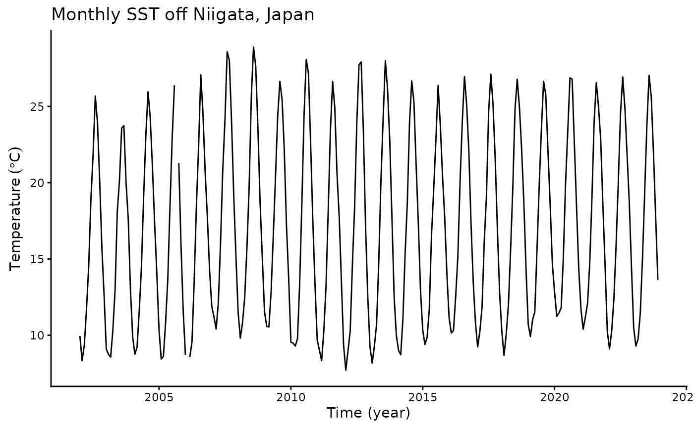
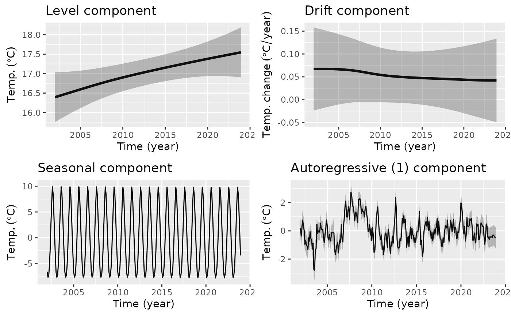
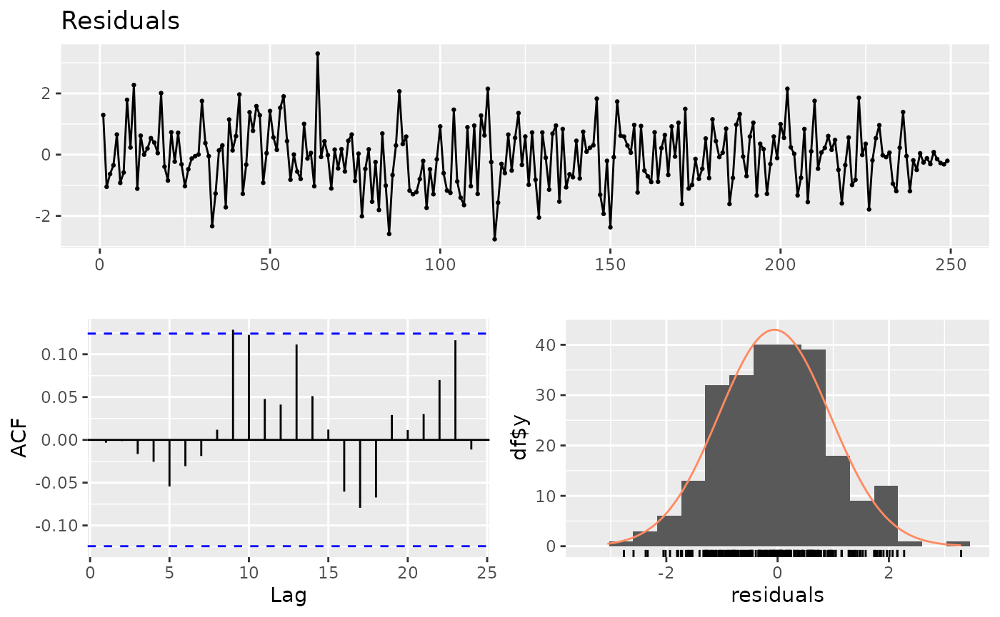

tempssm: State-space modeling for temperature time series in R
Akira S. Hirao, Shinya Baba, and Momoko Ichinokawa
2026-07-01
Source:vignettes/getting-started.Rmd
getting-started.RmdSummary
R package tempssm provides tools for state-space analysis of temperature time series, focusing on linear Gaussian state-space models estimated via Kalman filtering and smoothing as implemented in the KFAS package (Helske, 2017).
Key features
- Designed for temperature time series with arbitrary seasonal frequencies; currently validated primarily on monthly data
- Estimates latent states using linear Gaussian state-space models combined with Kalman filtering and smoothing
- Models temperature dynamics as a sum of interpretable latent components, including a long-term trend, seasonal cycle, autoregressive structure, and optional exogenous effects
- Allows users to specify an arbitrary order of the autoregressive component (default: AR(1))
- Implements time-series cross-validation for model evaluation
Prior Art and Scope
tempssm provides a domain-focused workflow for analyzing
temperature time series with linear Gaussian state-space models. It
brings together model construction, component extraction, uncertainty
summaries, residual diagnostics, visualization, and time-series
cross-validation in a single R package interface tailored to temperature
applications.
The package builds on established statistical methodology, including
linear Gaussian state-space modeling, Kalman filtering, and Kalman
smoothing. Model estimation is handled through the KFAS
package, which provides a general framework for state-space models in
R.
The initial implementation was adapted from the supplementary code provided by Baba (2024), accompanying Baba et al. (2024), which analyzed sea temperature trends using a linear Gaussian state-space model. The supplementary code is publicly available at:
https://github.com/logics-of-blue/sea-temperature-trend-jogashima
Compared with that prior implementation, tempssm extends
the workflow into a reusable R package interface with input validation,
documented S3 methods, tests, diagnostics, cross-validation utilities,
and examples for broader temperature time-series analysis.
The next section describes the state-space model used by
tempssm and clarifies how the trend, seasonal,
autoregressive, and exogenous components are represented.
State-Space Model in tempssm
We consider an extended version of the Basic Structural Time Series Model (BSTSM) to describe temperature time series with explicit long-term trend, seasonal variability, and auto-regressive component. The observation equation is given by where denotes the time index, is the observed temperature, is the latent state, and is the observation error.
The latent state is decomposed as where is the level (trend), the seasonal component, a stationary autoregressive component, and the contribution of exogenous variables.
The level component follows a second-order stochastic process: where is the process error of the level component.
The seasonal component is modeled with a sum-to-zero constraint: where is the process error of the seasonal component and denotes the seasonal frequency (e.g., for monthly data). This formulation ensures that seasonal effects are identifiable and comparable across different temporal resolutions. By enforcing the sum-to-zero constraint over one full seasonal cycle, the seasonal component captures recurring deviations from the underlying trend without introducing long-term drift. In models without a seasonal component, the seasonal term is set to zero and omitted from the satate equation.
The autoregressive component follows an th-order autoregressive (AR) process: Here, denotes the process error of the autoregressive component. The process error terms (, , and ) are assumed to be mutually independent and normally distributed.
The exogenous component is defined as The exogenous term represents the influence of external factors, which may include large-scale climate indices, regional environmental variables, or other physically motivated predictors relevant to the observed temperature time series. Each exogenous variable enters the model linearly through a time-invariant regression coefficient (), allowing both the magnitude and direction of its contribution to be estimated jointly with the latent state components.
When applying the model to observational data, the total number of parameters to be estimated () depends on the order of autoregressive component and the number of exogenous variables included. For example, in a model with a second-order autoregressive component and no exogenous covariates, six parameters are estimated: the observation error variance, the process error variances associated with the level, seasonal, and autoregressive components, and the first- and second-order autoregressive coefficients ( and ). In the general case with an -order autoregressive component and exogenous variables, a total number of parameters is .
The core implementation of parameter estimation procedure is based on
the supplementary code provided by Baba et al. (2024). Parameter
estimation is performed using a two-step optimization strategy
recommended by Helske (2017). In the first step, model parameters are
estimated using the Nelder-Mead method (Nelder & Mead, 1965) with
user-specified initial values. The resulting estimates are then used as
initial values in a second optimization step based on the BFGS algorithm
(Shanno, 1970). The main model-fitting function, tempssm(),
returns both filtering and smoothing estimates. Unless otherwise stated,
all results presented in this vignette are based on the smoothed
estimates.
How to use
Input Data Format
Input data for tempssm must be supplied as an R
ts object, which represents a regularly spaced time series
(see ?stats::ts or https://stat.ethz.ch/R-manual/R-devel/library/stats/html/ts.html).
To support data preparation, the package includes utility functions
that convert external observational data into ts objects
suitable for model fitting (see Appendix).
Practice: Applying State-Space Model to a Univariate Temperature Time Series
Objective
The objective of this practice is to demonstrate the basic application of a linear Gaussian state-space model to a univariate temperature time series. This example serves as an introduction to the modeling framework and highlights the role of autoregressive dynamics without the inclusion of exogenous variables.
Loading the Dataset
A sample sea surface temperature (SST) dataset is included in the package.
-
Dataset: Monthly sea surface temperature (SST) off
Niigata, Japan
-
Unit: Degrees Celsius
-
Period: February 2002 to December 2023
``
This dataset is derived from observations archived at Japan Oceanographic Data Center (JODC), Hydrographic and Oceanographic Department, Japan Coast Guard. Original daily SST data were obtained from https://www.jodc.go.jp/jodcweb/JDOSS/index.html and aggregated into monthly means.
## Jan Feb Mar Apr May Jun
## 2002 9.951613 8.332143 9.348387 11.713333 14.529032 18.906667
summary(niigata_sst)## Temp
## Min. : 7.707
## 1st Qu.:11.217
## Median :16.345
## Mean :17.033
## 3rd Qu.:22.787
## Max. :28.897
## NAs :2The dataset includes two missing observations. Even if missing observations was in your dataset included, there are retained and handled explicitly within the state-space modeling framework.
Plotting the Monthly SST Time Series
We begin by visualizing the monthly SST time series to examine its overall structure, including apparent trends, seasonal variability, and missing observations.
plt_niigata_sst <- forecast::autoplot(niigata_sst) +
ggplot2::labs(
y = expression(Temperature ~ (degree * C)),
x = "Time (year)"
) +
ggplot2::ggtitle("Monthly SST off Niigata, Japan") +
ggplot2::theme_classic()
plot(plt_niigata_sst)
Applying a Linear Gaussian State-Space Model
Here, we fit a linear Gaussian state-space model to the univariate SST time series using an AR(1) process for the state dynamics.
Preliminary comparisons among AR(1)–AR(3) models identified AR(1) as the preferred model. To keep this vignette concise, only the AR(1) analysis is presented. Users interested in evaluating alternative autoregressive structures can readily extend the workflow to higher AR orders.
The model summary provides parameter estimates and diagnostic information for assessing model adequacy.
# model with first-order autoregressive component
res <- tempssm(niigata_sst) # AR(1), the default model
summary(res)## tempssm summary
## -----------------
## Call:
## tempssm(temp_data = niigata_sst)
##
## Model fit:
## Log-likelihood : -277.95
## k : 5
## AIC : 565.9
## Converged : TRUE
##
## Variance parameters:
## Observation (H): 0.005985633
## State (Q trend): 1.268116e-07
## State (Q season): 0.001346144
## State (Q ar): 0.4097882
##
## Components of auto-regression:
## Order of AR: 1
## Coefficient of AR1: 0.7443
AIC(res)## [1] 565.8955Plotting Level, Drift, Seasonal, and Auto-Regressive Components
We visualize the estimated long-term evolution of temperature levels and their rates of change (drift) by extracting the corresponding latent components from the state-space model. Additionally, seasonal variability and autoregressive dependence are plotted out, allowing the underlying trend behavior to be examined more clearly.
# plot all components at once
plot(res)
The level component shows a persistent upward trend in sea surface temperature over the study period, while the drift component indicates a relatively stable positive rate of change. The shaded gray areas represent 95% confidence intervals for the estimated latent states, illustrating the uncertainty associated with each of estimated components.
Although the observed time series contains missing values, the state-space framework allows latent states to be estimated for the entire time span, including unobserved periods.
The standard plotting interface is plot(res). The
ggplot2-style interface autoplot(res) is also available and
produces the same component plot by default.
Simple Model Diagnostics
diag <- diagnose_residuals(res)
print(diag)## # A tibble: 1 × 4
## lb_stat lb_df lb_pvalue kurtosis
## <dbl> <dbl> <dbl> <dbl>
## 1 0.00312 2 0.998 3.06
Autocorrelation of residuals was not significant by Ljung-Box test (P > 0.05).
Estimated Parameters and Components
# Smoothing estimates
alpha_hat <- res$kfs$alphahat
head(alpha_hat)## level slope sea_dummy1 sea_dummy2 sea_dummy3 sea_dummy4
## Jan 2002 16.3944 0.005600277 -6.624678 -3.337435 0.6067452 4.7593085
## Feb 2002 16.4000 0.005600418 -7.676822 -6.624678 -3.3374347 0.6067452
## Mar 2002 16.4056 0.005600413 -7.346316 -7.676822 -6.6246785 -3.3374347
## Apr 2002 16.4112 0.005600308 -5.476554 -7.346316 -7.6768221 -6.6246785
## May 2002 16.4168 0.005600332 -2.217000 -5.476554 -7.3463159 -7.6768221
## Jun 2002 16.4224 0.005600464 2.468022 -2.217000 -5.4765542 -7.3463159
## sea_dummy5 sea_dummy6 sea_dummy7 sea_dummy8 sea_dummy9 sea_dummy10
## Jan 2002 8.5280154 9.9007962 6.4159187 2.4680217 -2.217000 -5.476554
## Feb 2002 4.7593085 8.5280154 9.9007962 6.4159187 2.468022 -2.217000
## Mar 2002 0.6067452 4.7593085 8.5280154 9.9007962 6.415919 2.468022
## Apr 2002 -3.3374347 0.6067452 4.7593085 8.5280154 9.900796 6.415919
## May 2002 -6.6246785 -3.3374347 0.6067452 4.7593085 8.528015 9.900796
## Jun 2002 -7.6768221 -6.6246785 -3.3374347 0.6067452 4.759308 8.528015
## sea_dummy11 arima1
## Jan 2002 -7.346316 0.175231565
## Feb 2002 -5.476554 -0.377441338
## Mar 2002 -2.217000 0.286840281
## Apr 2002 2.468022 0.767966035
## May 2002 6.415919 0.330187003
## Jun 2002 9.900796 0.009041978
# Smoothing estimate of level component
level_ts <- get_level_ts(res)
# Smoothing estimate of drift component
drift_ts <- get_drift_ts(res)
# Average drift rate per year across the full period
mean_drift_year <- mean(drift_ts)
print(mean_drift_year)## [1] 0.05259212Average annual increase in SST is approximately 0.05 °C.